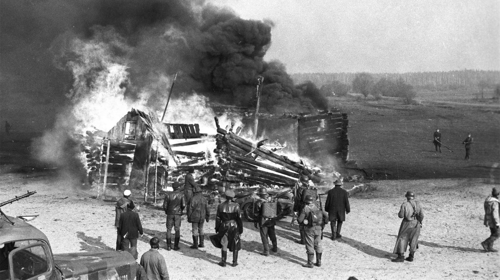
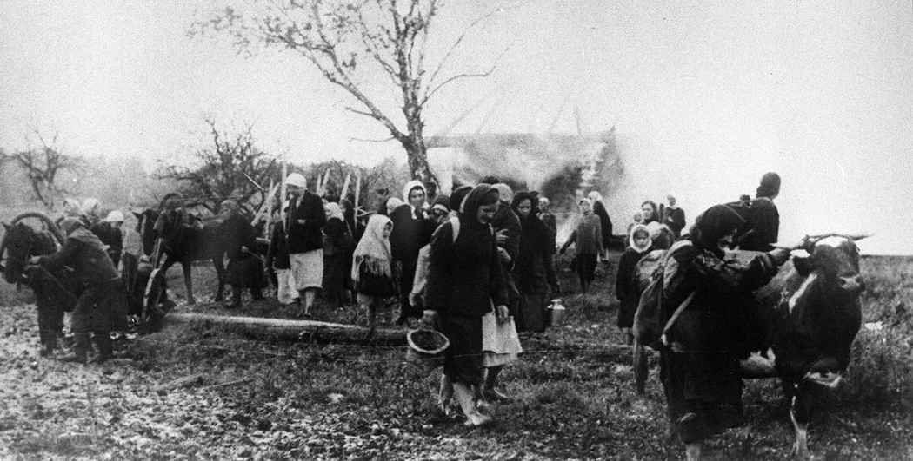

Карательные операции нацистов на территории Беларуси в годы Второй мировой войны были направлены на подавление сопротивления и уничтожение мирного населения.
Нацистские оккупационные силы проводили массовые карательные операции в ответ на активную деятельность партизан и сопротивление со стороны белорусского населения. Целью операций было полное подавление сопротивления, уничтожение партизан и устрашение населения.
Одной из самых известных операций была операция "Коттбус" (лето 1943 года), в ходе которой тысячи деревень были уничтожены, а их жители убиты или отправлены в лагеря смерти. Операция "Зимнее волшебство" также была направлена на подавление партизанского движения и привела к массовым жертвам среди мирного населения.
Операция "Коттбус" была одной из крупнейших операций нацистов, направленных на уничтожение партизан и их поддержки среди местного населения. В ходе этой операции были разрушены сотни деревень, а тысячи жителей были убиты или отправлены в концентрационные лагеря.
Операция "Зимнее волшебство" была еще одной масштабной акцией по уничтожению партизан и устрашению населения. В ходе операции были убиты десятки тысяч мирных жителей и уничтожено множество деревень.